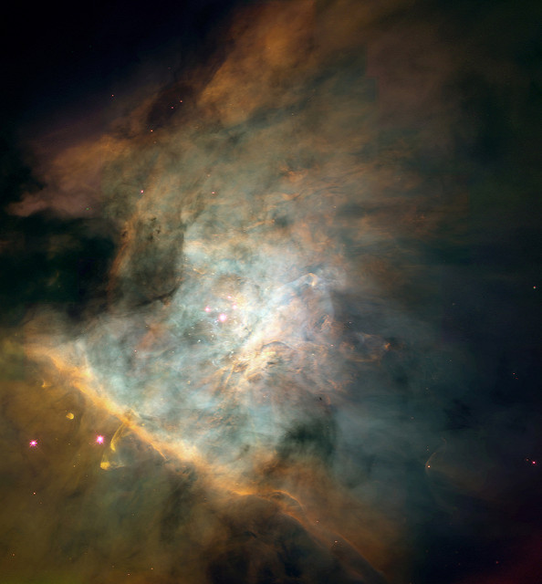

Our Pale Blue Dot

"We were hunters and foragers. The frontier was everywhere. We were bounded only by the Earth, and the ocean, and the sky. The open road still softly calls. Our little terraquious globe as the madhouse of those hundred thousand millions of worlds. We, who cannot even put our own planetary home in order, riven with rivalries and hatreds; Are we to venture out into space? By the time we're ready to settle even the nearest of other planetary systems, we will have changed. The simple passage of so many generations will have changed us. Necessity will have changed us. We're... an adaptable species. It will not be we who reach Alpha Centauri and the other nearby stars. It will be a species very like us, but with more of our strengths, and fewer of our weaknesses. More confident, farseeing, capable, and prudent. For all our failings, despite our limitations and fallibilities, we humans are capable of greatness. What new wonders, undreamed of in our time, will we have wrought in another generation? And another? How far will our nomadic species have wandered by the end of the next century? And the next millennium? Our remote descendants, safely arrayed on many worlds through the solar system and beyond, will be unified by their common heritage, by their regard for their home planet, and by the knowledge that whatever other life there may be, the only humans in all the universe come from Earth. They will gaze up, and strain to find the blue dot in their skies. They will marvel at how vulnerable the repository of raw potential once was. How perilous, our infancy. How humble, our beginnings. How many rivers we had to cross before we found our way."
What is the Cosmic Perspective?
Excerpt by Neil Tyson Degrasse
Take water. It's simple, common, and vital. There are more molecules of water in an eight-ounce cup of the stuff than there are cups of water in all the world's oceans. Every cup that passes through a single person and eventually rejoins the world’s water supply holds enough molecules to mix 1,500 of them into every other cup of water in the world. No way around it: some of the water you just drank passed through the kidneys of Socrates, Genghis Khan, and Joan of Arc.
How about air? Also vital. A single breathful draws in more air molecules than there are breathfuls of air in Earth's entire atmosphere. That means some of the air you just breathed passed through the lungs of Napoleon, Beethoven, Lincoln, and Billy the Kid.
Time to get cosmic. There are more stars in the universe than grains of sand on any beach, more stars than seconds have passed since Earth formed, more stars than words and sounds ever uttered by all the humans who ever lived.
Want a sweeping view of the past? Our unfolding cosmic perspective takes you there. Light takes time to reach Earth's observatories from the depths of space, and so you see objects and phenomena not as they are but as they once were. That means the universe acts like a giant time machine: the farther away you look, the further back in time you see—back almost to the beginning of time itself. Within that horizon of reckoning, cosmic evolution unfolds continuously, in full view.
Want to know what we're made of? Again, the cosmic perspective offers a bigger answer than you might expect. The chemical elements of the universe are forged in the fires of high-mass stars that end their lives in stupendous explosions, enriching their host galaxies with the chemical arsenal of life as we know it. The result? The four most common chemically active elements in the universe—hydrogen, oxygen, carbon, and nitrogen—are the four most common elements of life on Earth. We are not simply in the universe. The universe is in us.
Yes, we are stardust. But we may not be of this Earth. Several separate lines of research, when considered together, have forced investigators to reassess who we think we are and where we think we came from.
First, computer simulations show that when a large asteroid strikes a planet, the surrounding areas can recoil from the impact energy, catapulting rocks into space. From there, they can travel to—and land on—other planetary surfaces. Second, microorganisms can be hardy. Some survive the extremes of temperature, pressure, and radiation inherent in space travel. If the rocky flotsam from an impact hails from a planet with life, microscopic fauna could have stowed away in the rocks' nooks and crannies. Third, recent evidence suggests that shortly after the formation of our solar system, Mars was wet, and perhaps fertile, even before Earth was.
Those findings mean it's conceivable that life began on Mars and later seeded life on Earth, a process known as panspermia. So all earthlings might—just might—be descendants of Martians.
Again and again across the centuries, cosmic discoveries have demoted our self-image. Earth was once assumed to be astronomically unique, until astronomers learned that Earth is just another planet orbiting the Sun. Then we presumed the Sun was unique, until we learned that the countless stars of the night sky are suns themselves. Then we presumed our galaxy, the Milky Way, was the entire known universe, until we established that the countless fuzzy things in the sky are other galaxies, dotting the landscape of our known universe.
Today, how easy it is to presume that one universe is all there is. Yet emerging theories of modern cosmology, as well as the continually reaffirmed improbability that anything is unique, require that we remain open to the latest assault on our plea for distinctiveness: multiple universes, otherwise known as the multiverse,
in which ours is just one of countless bubbles bursting forth from the fabric of the cosmos.